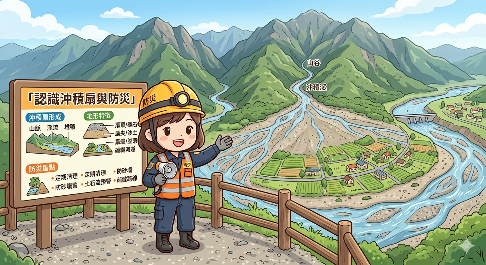
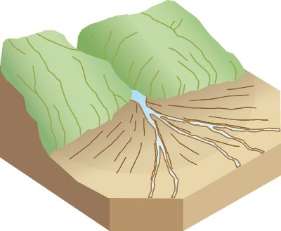

副標：從山洪搬運到平原堆積，一本看懂沖積扇的形成與防災
點擊下方按鈕開始閱讀

沖積扇（alluvial fan）是山地與平原交界處最典型的堆積地形之一，其形成與演育涉及水文、地形動力與氣候條件的長期交互作用。
沖積扇的形成始於山區河流攜帶大量碎屑物質（礫石、砂、粉砂）流出山口時的動能變化。在狹窄陡峻的山谷中，水流速度快、搬運能力強；當河流流出谷口進入坡度驟降的開闊平原時，流速迅速降低，搬運能力下降，沉積物逐漸堆積，形成扇狀展開的堆積體。
初期堆積：以粗礫為主，集中於扇頂，河道不穩定呈辮狀。
擴展發育：沖積扇向外擴展，粒徑由粗到細分選，河道頻繁改道（avulsion）。
成熟穩定：坡度趨緩，河道較固定，人類活動開始介入。
此外，氣候（降雨）、構造運動與岩性也會影響其發育；台灣因地形陡峭與颱風頻繁，使沖積扇動態性強。

扇頂：坡度最大、礫石多、滲透性高。
扇中：坡度減緩、砂質沉積、河道易改道。
扇端：坡度最小、細粒沉積，常見地下水湧出。
沖積扇潛藏土石流、洪水改道與淹水風險，特別在強降雨期間。
在人文利用方面，沖積扇適合農業與聚落發展，亦利於地下水補注與交通建設，但過度開發可能導致災害加劇。
整體而言，沖積扇是資源與風險並存的地形，需在人類利用與自然平衡間取得調和。